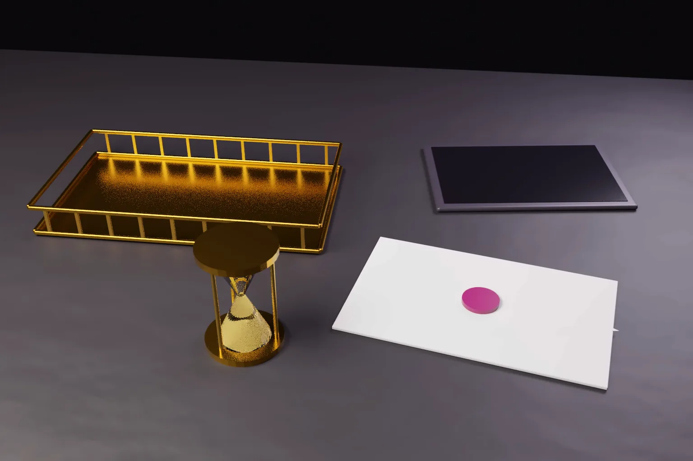

Can a patent application be deemed abandoned in India if the applicant never received the examination report? In Tetra Technologies v Union of India the Delhi High Court said no, not on proof of dispatch alone.
Three recent Delhi High Court decisions deal with the same theme. Each concerns what the Indian Patent Office must do before an application is lost or refused. Tetra Technologies concerns an examination report sent only by email. Glisten LLC concerns a refusal on a ground that was not in the hearing notice. Fresenius Kabi concerns a refusal issued without a separate hearing under section 14 of the Patents Act, 1970. Read together, they give applicants and their agents a clear map of the procedural safeguards that the court will enforce.
Tetra Technologies: an email the applicant never saw
Tetra Technologies, Inc. filed Indian national phase application 202017019804 on 11 May 2020 through its patent agent. The Patent Office said it emailed the first examination report on 28 October 2021. No reply was filed, and the Office treated the application as abandoned under section 21(1). Counsel for the Office stated that the application was treated as abandoned on 29 December 2022, after the Covid period ended.
Under Rule 24B(5) of the Patents Rules, 2003, an applicant has six months from the first statement of objections to put the application in order. Rule 24B(6) allows one extension of three months on Form 4, requested before the period expires. Missing that window normally ends the application.
Tetra said neither it nor its agent ever received the email. It found the abandonment on the portal on 25 April 2023. It then wrote to the Office repeatedly, raised the issue in Open House sessions, and filed a petition on Form 30 on 5 March 2024 asking for the report to be issued again. That petition was never decided. The Office replied that a duplicate examination report could not be issued.
Justice Purushaindra Kumar Kaurav decided the writ petition on 6 October 2026 in W.P.(C)-IPD 33/2024. The court held that deemed abandonment under section 21(1) rests on the examination report having been effectively communicated. Rule 6(3) allows notices to be sent by authenticated electronic transmission, and Rule 6(4) treats the date of dispatch as the date of the communication. But Rule 6(5) lets the Controller excuse delay where a communication was received late. In the court's words, the scheme "does not treat mere dispatch as conclusive of actual receipt."
Several facts mattered. Tetra produced screenshots of its inbox for the week the email was sent. The Office produced no proof of delivery. The system email itself carried a disclaimer that it was under testing and not valid for legal proceedings. The Office could have sent the report to the postal address for service, or sent it again once the grievance was raised. Tetra's conduct was wholly inconsistent with any intention to abandon. The court also relied on natural justice under section 80 and Rule 129.
The court set aside the abandonment and directed the Office to restore the application. The Office must send the report to the agent by post and email within one week. Tetra then has eight weeks from the order to reply. The court said its directions turned on the peculiar facts of the case and expressed no view on the merits.
- Proof that an email was dispatched is not, by itself, proof that an examination report was received.
- A Controller may refuse only on grounds put to the applicant in the hearing notice.
- Written submissions after a hearing do not cure a ground that was never raised.
- A hearing in a pre grant opposition does not replace the applicant's own hearing under section 14.
- In each case the remedy was restoration or remand. None of the rulings decided patentability.
Glisten: the hearing notice sets the agenda
In Glisten LLC v Assistant Controller of Patents and Designs, C.A.(COMM.IPD-PAT) 21/2026, decided on 1 October 2026, the same judge considered application 202017005875 for a gemstone coating. The examination report had raised lack of inventive step over two documents against all 18 claims. The hearing notice confined that objection to claim 18 alone. Glisten gave up claim 18 at the hearing. The Controller then refused claims 1 to 17 for lack of inventive step.
The court set the refusal aside. It held that if the Controller proposes to refuse an application on a ground, that ground must first be put to the applicant. An applicant is entitled to take the hearing notice at face value and prepare accordingly. Written submissions filed after the hearing did not relieve the Controller of that duty. The application was restored for fresh consideration. The court did not decide whether claims 1 to 17 are inventive.
Fresenius Kabi: two separate hearings
In Fresenius Kabi Ipsum SRL v Assistant Controller of Patents and Designs, C.A.(COMM.IPD-PAT) 7/2025, decided on 31 August 2026, Justice Jyoti Singh considered a process application for sugammadex. A pre grant opposition had been filed and heard. The Controller refused the application on 21 November 2024 without giving a separate hearing under section 14.
Following the Division Bench in Novartis AG v Natco Pharma, the court held that examination and opposition are independent processes. A hearing in the opposition operates in a different field. Denying the section 14 hearing was a violation of a substantive right, and it vitiated the order. The court also flagged gaps in the inventive step reasoning, but expressly left the merits open. The matter was remanded for a fresh decision within six months, after hearing both the applicant and the opponent.
What the rulings do not decide
None of these decisions says that email service is invalid. Rule 6(3) expressly permits it, and the Office continues to rely on it. Tetra holds only that, where receipt is seriously doubted and the Office has no proof of delivery, dispatch alone cannot sustain abandonment. An applicant who simply ignored a report that reached its inbox gets no help from it. The court also noted the caution in its earlier decision in European Union v Union of India that writ relief from abandonment is for rare cases.
Equally, Glisten and Fresenius do not weaken the Controller's power to refuse. They require that the power be exercised after a fair hearing on the actual grounds of refusal.
How the position differs in the US and Europe
United States. An applicant who did not receive an Office action can petition under 37 CFR 1.181 to withdraw the holding of abandonment. No fee is payable. The USPTO expects evidence, including a description of the docketing system, a statement that a search of the file showed no receipt, and a copy of the docket record. Under 37 CFR 1.181(f), the petition should be filed within two months of the notice of abandonment, and that period cannot be extended. Separately, an abandoned application can be revived under 37 CFR 1.137(a) if the entire delay in reply was unintentional. That petition requires the reply, a fee and a statement.
Europe. Since 1 November 2023, Rule 127(2) EPC deems an electronically notified document delivered on the date it bears. That fiction does not apply if the document failed to reach its destination. If delivery is disputed, the EPO must establish that the document reached its destination. If it arrived more than seven days after its date, the time limit is extended by the excess days.
India. The Patents Rules contain no deemed delivery date for email and no fixed burden rule. Rule 6(4) dates a communication from dispatch, and Rule 6(5) allows relief for late receipt on a prompt petition with evidence. Tetra moves Indian practice closer to the European position. Where the applicant shows credible evidence of non receipt and the Office cannot show delivery, abandonment will not stand.
Practical steps for applicants and agents
- Check the e register and your email for every pending application at least monthly. Do not rely on email alone.
- Keep the Office's sender addresses on an allow list, and preserve server logs and inbox records. They are the evidence Tetra relied on.
- Keep the postal address for service current, as Rule 5 requires an address for service with both a postal address in India and an email address.
- If you discover an abandonment, act at once. File a petition on Form 30 with evidence and ask for the report to be issued again. Tetra styled its petition under Rule 6(6). Rule 6(5) applies where a communication was received late. Prompt and consistent conduct weighed heavily in Tetra.
- Compare every hearing notice line by line with the examination report. Respond expressly to anything dropped, and ask the Controller to confirm which objections remain.
- Where a pre grant opposition is pending, ask for the section 14 hearing if one has not been scheduled.
- If a refusal rests on a ground that was never put to you, consider an appeal to the High Court on procedural grounds as well as merits.
For the full sequence of filing, examination and grant, see our step by step guide to patent filing procedure in India. Foreign applicants entering India through the national phase can read our guide to India patent filing for foreign applicants. Our earlier article on the 2026 guidelines on AI in patent examination explains what to check in every examination report.
Frequently asked questions
Can an abandoned patent application be restored in India?
Sometimes. Where the applicant did not receive the examination report and acted promptly, the Delhi High Court has restored the application. The first step is usually a petition to the Controller on Form 30 with supporting evidence, asking for the report to be issued again. A writ petition is a remedy for rare cases.
Is an examination report sent by email valid in India?
Yes. Rule 6(3) permits authenticated electronic transmission. After Tetra, however, proof of dispatch alone may not support abandonment if receipt is genuinely disputed and the Office cannot prove delivery.
Can the Controller refuse a patent on a ground not in the hearing notice?
No. In Glisten the Delhi High Court held that a ground must be put to the applicant before refusal. Written submissions after the hearing do not cure the defect.
Official source
- Tetra Technologies, Inc. v Union of India, W.P.(C)-IPD 33/2024, Delhi High Court, 6 October 2026 (judgment copy)
- Glisten LLC v Assistant Controller of Patents and Designs, C.A.(COMM.IPD-PAT) 21/2026, Delhi High Court, 1 October 2026
- Fresenius Kabi Ipsum SRL v Assistant Controller of Patents and Designs, C.A.(COMM.IPD-PAT) 7/2025, Delhi High Court, 31 August 2026 (judgment copy)
- Patents Rules, 2003, Rule 6 (IP India)
- Patents Rules, 2003, Rule 24B (IP India)
- USPTO: withdrawal of abandonment based on failure to receive an Office action
- EPO Guidelines E-II, 2.4: electronic notification under Rule 127 EPC